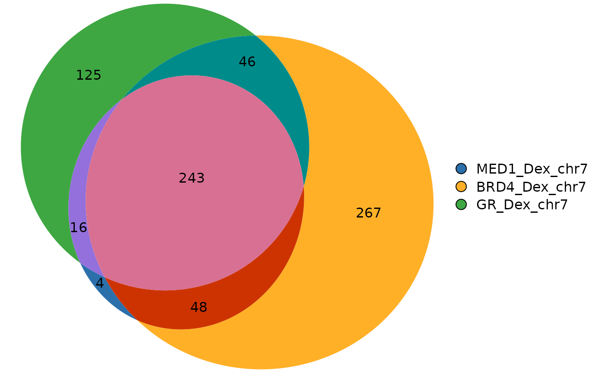

Example consensus peak subsets for MED1, BRD4, and GR after dexamethasone
treatment in A549 cells. Each set has been restricted to peaks on
chr7 to keep the dataset small and suitable for examples and tests.
Format
A GRangesList with 3 named elements:
- MED1_Dex_chr7
Consensus MED1 peaks (chr7 subset).
- BRD4_Dex_chr7
Consensus BRD4 peaks (chr7 subset).
- GR_Dex_chr7
Consensus GR peaks (chr7 subset).
Details
The original full consensus peak sets are available as gzipped BED files in
inst/extdata/:
A549_MED1_Dex.stdchr.bed.gzA549_BRD4_Dex.stdchr.bed.gzA549_GR_Dex.stdchr.bed.gz
These are not trimmed, but for package efficiency the dataset here
(a549_chipseq_peaks) only includes the chr7 subsets.
References
Tav C, Fournier É, Fournier M, Khadangi F, Baguette A, Côté MC, Silveira MAD, Bérubé-Simard F-A, Bourque G, Droit A, Bilodeau S (2023). "Glucocorticoid stimulation induces regionalized gene responses within topologically associating domains." Frontiers in Genetics. doi:10.3389/fgene.2023.1237092
Examples
# Load dataset
data(a549_chipseq_peaks)
a549_chipseq_peaks
#> Loading required namespace: GenomicRanges
#> GRangesList object of length 3:
#> $MED1_Dex_chr7
#> GRanges object with 336 ranges and 2 metadata columns:
#> seqnames ranges strand | name score
#> <Rle> <IRanges> <Rle> | <character> <numeric>
#> [1] chr7 1157024-1157513 * | 4997 0
#> [2] chr7 1520389-1521218 * | 4998 0
#> [3] chr7 1536927-1537642 * | 4999 0
#> [4] chr7 2309837-2310506 * | 5000 0
#> [5] chr7 3028013-3028396 * | 5001 0
#> ... ... ... ... . ... ...
#> [332] chr7 158733134-158733544 * | 5328 0
#> [333] chr7 158818327-158819201 * | 5329 0
#> [334] chr7 158821150-158821448 * | 5330 0
#> [335] chr7 158863388-158864513 * | 5331 0
#> [336] chr7 159015348-159016094 * | 5332 0
#> -------
#> seqinfo: 24 sequences from an unspecified genome; no seqlengths
#>
#> $BRD4_Dex_chr7
#> GRanges object with 604 ranges and 2 metadata columns:
#> seqnames ranges strand | name score
#> <Rle> <IRanges> <Rle> | <character> <numeric>
#> [1] chr7 234690-235402 * | 9419 0
#> [2] chr7 538240-538633 * | 9420 0
#> [3] chr7 1156721-1157555 * | 9421 0
#> [4] chr7 1504294-1504733 * | 9422 0
#> [5] chr7 1506830-1507301 * | 9423 0
#> ... ... ... ... . ... ...
#> [600] chr7 158829343-158830028 * | 10018 0
#> [601] chr7 158856251-158856723 * | 10019 0
#> [602] chr7 158863108-158864616 * | 10020 0
#> [603] chr7 159012435-159013222 * | 10021 0
#> [604] chr7 159015311-159016245 * | 10022 0
#> -------
#> seqinfo: 24 sequences from an unspecified genome; no seqlengths
#>
#> $GR_Dex_chr7
#> GRanges object with 450 ranges and 2 metadata columns:
#> seqnames ranges strand | name score
#> <Rle> <IRanges> <Rle> | <character> <numeric>
#> [1] chr7 729847-730122 * | 6571 0
#> [2] chr7 1156806-1157495 * | 6572 0
#> [3] chr7 1520508-1521044 * | 6573 0
#> [4] chr7 2309959-2310483 * | 6574 0
#> [5] chr7 2860620-2860960 * | 6575 0
#> ... ... ... ... . ... ...
#> [446] chr7 158733144-158733534 * | 7016 0
#> [447] chr7 158818350-158819168 * | 7017 0
#> [448] chr7 158821076-158821582 * | 7018 0
#> [449] chr7 158863549-158864364 * | 7019 0
#> [450] chr7 159015407-159016007 * | 7020 0
#> -------
#> seqinfo: 24 sequences from an unspecified genome; no seqlengths
#>
# Compute overlaps and plot
ov <- computeOverlaps(a549_chipseq_peaks)
plotVenn(ov)
